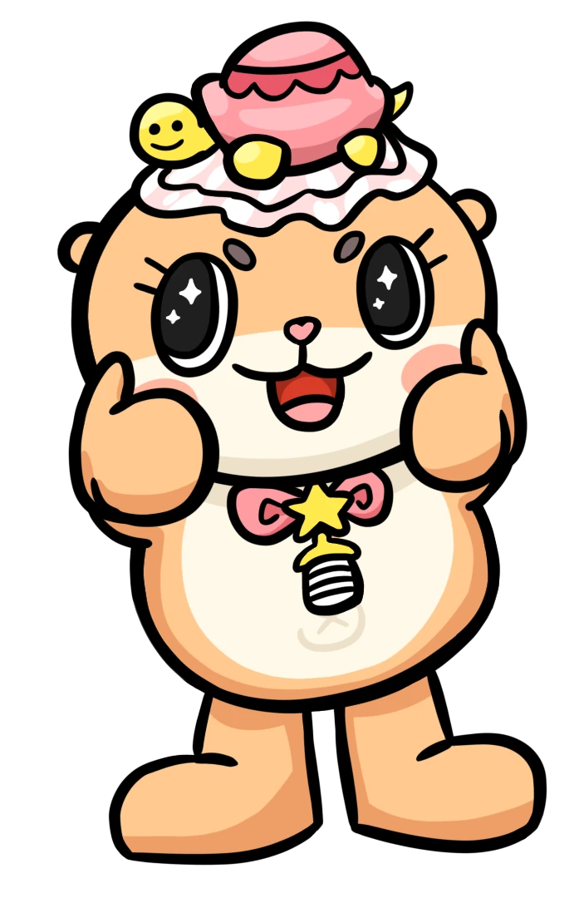

Icon above comes from https://www.teepublic.com/t-shirt/3794193-chiitan, which is a modified version of the chiitan logo.
I FUCKING LOVE CHIITAN!!!!!!!
Who is Chiitan?
This image comes from https://charando.fanmo.jp/character.php?char=chiitan.
Chiitan is
Japans craziest mascot! They are known for their crazy videos mainly on
YouTube and
X. Their birthday is 15/12/2017 (DD/MM/YYYY) and they are eternally 0 years old.
This text was translated from https://charando.fanmo.jp/character.php?char=chiitan. This translation may or may not be correct.
| Likes |
Milk and helping people. Being praised. |
| Gender |
Because Chiitan is a fairy, they do not have a gender. |
| Personality |
They are a friendly energetic otter that has only become more energetic as they grew up. When they are given anything, they try to play with it as much as they can. Chiitan thinks this is normal. They also get along good with the neighborhood kids. |
| Worries |
Because their mind is always the same as a 0 year old, they think the neighborhood kids will grow up and stop playing with them. |
| Skills |
Exercising and warning people about the scary people smoking on the street. |
| Dream |
To make everyone in the world smile. |
| Dislikes |
Being angry. |
| Looking foward to |
Save 30 yen every day to buy snacks and juice. |

Art by @saltpuff on X
Who is the turtle on their head?
The turtle on Chiitans head is named Kame
(kah may)-chan. They are a fairy turtle who is also eternally 0 years old. Their birthday is 14/12/2017. For some reason, they have a fake Kansai accent.
This text was translated from https://charando.fanmo.jp/character.php?char=kamechan. This translation may or may not be correct.
| Gender |
Because Kame-chan is a fairy, they do not have a gender. |
| Personality |
They do not get angry often, but when they do they are scary. |
| Pasttime |
Occasionally goes out by themselves |
| Skills |
They always prepare to land.(I am not sure about this translation.) When they get excited, their movement speed increases. |
| Dream |
To keep Chiitan happy for a really long time. |
| Dislikes |
When Chiitan loses their energy. |
| Looking foward to |
Eating snacks that Chiitan shares with them. |